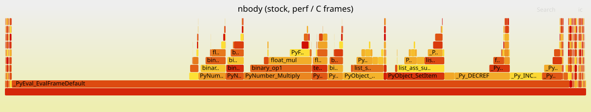

Five bodies, twenty thousand steps, and a sixth of the runtime spent computing the number zero
Matan Cohen · Yuval Kogan · HWSW Final Project, Technion · github.com/matanco64/HWSW_Project
A probe is falling toward Neptune, and somebody has to know where it will be in six hours. That is this benchmark: integrate the Sun and the four gas giants forward under Newtonian gravity, twenty thousand steps at a time. It is thirty lines of arithmetic with no libraries, no I/O and no data structures more exotic than a list of floats — which makes it the cleanest possible place to ask a question that turns out to have a surprising answer: when Python runs this, what is it actually doing? Almost none of it is gravity.
nbody comes from the Computer Language Benchmarks Game: a symplectic-Euler integration of the Sun plus Jupiter, Saturn, Uranus and Neptune under Newtonian gravity. Five bodies means ten interacting pairs, computed once at import and reused for the whole run. Each pyperf iteration runs report_energy(), advance(dt=0.01, n=20000), then report_energy() again.
Setup. Course QEMU VM: Ubuntu 22.04, CPython 3.10.12, pyperformance 1.14.0, KVM on a Technion host. Timings are pyperformance run --rigorous (40 processes / 120 values) on release python3. Profiles are recorded separately with python3-dbg for symbols and are never quoted as timings — the debug build's assertions and allocator hooks inflate interpreter-internal frames roughly 2.5–3×. Guest quirks: the cycles PMU event records zero samples under KVM, so sampling uses -e cpu-clock; and perf stat silently returns zeros past four events, so counters are taken in two passes.
Stock nbody measures 231 ms ± 3 ms, reproduced to within 1 ms across runs a week apart. The flame graph is a single advance() plateau over _PyEval_EvalFrameDefault, about 95% of samples. The interesting part is underneath it:
| Cost group | Self | Symbols |
|---|---|---|
| List subscript machinery | ~15% | list_ass_item 2.83, PyNumber_AsSsize_t 2.12, _PyNumber_Index 1.87, PyObject_GetItem 1.65, list_item 1.65, PyObject_SetItem 1.47, PyLong_AsSsize_t 1.43, list_ass_subscript 1.33 |
| Generic binary-op dispatch | ~8% | binary_op1 5.75, _Py_CheckSlotResult 2.22 |
| Float boxing | large | PyFloat_FromDouble / float_dealloc churn |
| Actual arithmetic | small | libm pow for d**-1.5, plus the adds and multiplies |
On CPython 3.10 every v1[0] -= dx * b2m is a full PyObject_GetItem → _PyNumber_Index → PyLong_AsSsize_t → list_item round trip, and the reverse for the store. Roughly a sixth of the runtime is spent converting the constant 0 into a C array index, twenty thousand times over. None of it is physics. CPython 3.11 later added BINARY_SUBSCR_LIST_INT specialization to make exactly this cheap; 3.10 — the course VM's version — has none of it.

The inner loop rediscovers, twenty thousand times, a schedule that is constant for the entire run: which bodies interact, in what order, with which masses. Only the 30 coordinate floats change. So we compute that schedule once, at import time (outside the timed region) and emit straight-line source for advance(dt, n) in which every coordinate is a Python local (LOAD_FAST) and every mass is a literal (LOAD_CONST). State is read out of the body lists before the step loop and written back after, so report_energy() observes the same objects as before. This is partial evaluation — the technique dataclasses and Django's template compiler use.
| Per integration step | Stock | Generated |
|---|---|---|
| Bytecodes executed | 1484.5 | 850.6 |
| List subscripts (BINARY_SUBSCR/STORE_SUBSCR) | 150 | 4 |
Removing 146 of 150 subscripts per step attacks precisely the ~15% tower above. Bytecode counts come from sys.monitoring and are a version-independent structural metric: unlike wall clock they do not depend on which CPython specializes what.
The output is bit-for-bit identical. All 35 state floats compare == against stock after 20,000 steps, and so does report_energy(): max |Δ| = 0.0 — an equality, not a tolerance. We kept the stock dt * (dsq ** -1.5) rather than the cheaper dt / (dsq * sqrt(dsq)) to preserve that claim, and measurement justified the choice independently: the sqrt variant was not distinguishable from zero on any interpreter tested, and on one run came out slower. The generated code is emitted by a function that is generic in N — hand it nine bodies and it emits a nine-body kernel — so this is a specialization of the given workload, not a hand-written answer.
We also disproved a widely-repeated micro-optimization recorded in our own research notes: "stop destructuring positions, index r1[0] - r2[0] directly". Measured against a semantic-no-op control, it is worth 1.005× — nothing. The real win in that tier (1.12×) came from a different change: turning six subscript read-modify-writes into six plain stores.
Stock and optimized were run back-to-back in the same session on the VM with pyperformance run --rigorous, the optimized build through a custom --manifest keeping the benchmark name identical so pyperf compare_to matches by name. Significance is Student's two-tailed t-test at 95% confidence.
| Configuration | Mean ± std dev | Speedup | Correctness |
|---|---|---|---|
| Stock pyperformance 1.14.0 | 231 ms ± 3 ms | 1.00× | reference |
| Optimized (shipped, pure Python) | 141 ms ± 4 ms | 1.64× | bit-identical state + energy |
A 39.0% reduction in runtime against a requirement of 7% — 5.6× the bar — and the difference is reported significant. On CPython 3.12 the same change measures ~1.5× rather than 1.64×: 3.11+ adaptive specialization already recovers part of the subscript overhead we remove, so the win is larger on the 3.10 the course targets. Anyone re-running this on a newer interpreter should expect a smaller number and should not read it as a regression.
A native tier, for scale. We also built the kernel as a Rust/PyO3 extension (rust/nbody/): state resident in a #[pyclass], one FFI crossing per advance(). It runs the 20,000-step integration in 3.59 ms against 92.5 ms — 25.8× on the kernel — and its output is also bit-for-bit identical, because f64::powf(-1.5) lowers to the same glibc pow CPython calls and Rust neither contracts to FMA nor reassociates floats by default. The FFI crossing costs 91 ns, or 2.5e-5 of one advance() call, which is why the coarse boundary is the right one. We deliberately did not wire it into the measured benchmark: the pure-Python tier already clears the bar, and an optional import that silently falls back would make the measured configuration ambiguous. It stands as a tier — and, as §5 argues, as the accelerator's behavioural specification.
§2 showed the arithmetic is cheap and the interpretation is expensive; §4 showed that even after removing the interpreter entirely (Rust), the remaining cost is concentrated in one operation: d⁻¹⋅⁵, a libm pow call per pair per step. That is the case for fixed-function hardware.
Precedent. The GRAPE machines (GRAPE-1…8, University of Tokyo, Makino et al.) were real silicon built for exactly this force law and won Gordon Bell prizes; GRAPE-8 reports 20.5 Gflops/W. The designs were never released as open RTL — the published record is papers, not source — so the design below is our own, informed by theirs.
Datapath (per pair, fully pipelined): 3 subtractions for dx,dy,dz → 3 multiplies + 2 adds for d² → d⁻¹⋅⁵ via an rsqrt ROM seed plus two Newton–Raphson iterations → two mass multiplies → six velocity accumulate-FMAs. A second short pipeline integrates the five positions once per step. Control: an FSM sequences all ten pairs then the position update; the only cross-step dependency is the state itself, so the pair loop pipelines freely while steps stay serial.
Inputs / outputs and operating frequency. FP64 datapath (FP32 carried as an area design point). MMIO register map: body-state load window (5×7×64 bit), DT (64), NSTEPS (32), START doorbell, STATUS/IRQ, and a read-back window. Target 100 MHz on FPGA; at ~20–30 cycles per step that is ~500k cycles ≈ 5 ms, against 231 ms in Python and 3.59 ms in Rust.
HW/SW interface. The key decision is the NSTEPS register: software writes dt and n=20000 once and rings the doorbell once, collapsing 20,000 interpreter-driven iterations into a single MMIO transaction. A thin character driver plus a ctypes/PyO3 wrapper exposes it to Python. And the software work already specified it: the Rust #[pyclass] from §4 is the register file, advance(dt, n) is the doorbell write, and state() is the read-back window. One boundary, three implementations.
Justification. advance() is ~95% of runtime, so Amdahl is unusually kind — offloading it bounds the whole benchmark rather than a slice of it. Assumptions: state resident on-device across steps (no per-step DMA), one pair per pipeline pass, and a fully pipelined rsqrt unit.
Performance / area / frequency / power trade-offs. Three knobs. Replication: one pipeline reused across the ten pairs (small area, ~10× latency) versus ten replicated pipelines (~10× area, near-single-step latency). Precision: FP64→FP32 roughly halves multiplier area and shortens the critical path, buying frequency at a precision cost that is directly measurable against the benchmark's own energy oracle — an experiment our bit-identical software baseline makes meaningful. rsqrt: ROM seed width against Newton–Raphson iteration count trades table area for latency; this is the operation that still dominates even the compiled Rust kernel, so it is where fixed-function hardware earns its win over software. On power, the GRAPE lineage is the evidence that a fixed-function gravity pipeline reaches roughly an order of magnitude better Gflops/W than a general-purpose core on this kernel.
The benchmark looks like a physics problem and behaves like an interpreter problem. About a sixth of stock runtime goes into turning the constant 0 into an array index, which is why the change that paid was not a better algorithm but the removal of 146 of 150 list subscripts per step — 1.64× on the course VM, 39% less runtime, against a 7% requirement, with bit-for-bit identical output. The Rust kernel takes the same idea to its conclusion at 25.8×, still bit-identical, and in doing so exposes the one remaining arithmetic bottleneck that only hardware fixes.
The negative results were worth more than the win. Barnes–Hut — and by extension FMM — is 3.4× slower at N=5 with a crossover near N ≈ 350; struct-of-arrays, the standard data-layout advice, loses in an interpreter; NumPy loses at this vector length; and a widely-repeated micro-optimization is worth statistically nothing. Each cost less to establish than the effort it redirected. The same discipline then paid a second time in hardware: the measured 95% share of advance() is what makes a step-count register worth building, and the measured residual cost of pow is what makes the rsqrt unit the centre of the design.